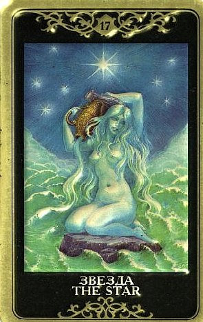

Наличие этой карты в раскладе говорит о существовании в жизни человека высшей путеводной силы, которой он должен довериться.
Человек всегда знает, что для него сейчас Звезда.
Это некое желание, цель, которая всегда находится перед его внутренним взором, которую он готов «загадать» в любой скоротечный миг («пока звездочка падает»).
Он знает, что это за вера, что за надежда, живущие в его душе и иногда кажущиеся слишком высокими.

Так вот, именно им надо верить, ими руководствоваться, не предавать их со страху, ничего не бояться и следовать за ними!
Это дар небес, его «ведут», видят и не потеряли.
Главное, чтобы он сам не потерял себя настоящего, высшего и подлинного.
Поэтому значение карты так тесно связано с Верой и Доверием Будущему.
Совет Звезды– оставайся НАД земным восприятием этого вопроса, он решается в другой плоскости.
Оставайся в спокойной уверенности, что твое чутье тебя не обманывает, что предмет твоих исканий – в пределах досягаемости.
Звезды светят всегда, даже если мы не в состоянии увидеть их – это справедливо для очень многих вещей. Если чего-то нет в настоящее время перед глазами, это не значит, что этого не существует вовсе. Звезда говорит, что то, во что ты веришь, существует, настанет миг, и ты увидишь. Это главное.
Она говорит о явном присутствии направляющей путеводной силы Вселенной в жизни вопрошающего на данном этапе.
Ее появление в раскладе говорит, что все будет хорошо, в жизнь войдет то, чего так долго ждали.
То, о чем человек спрашивает, имеет самые благоприятные перспективы.
Можно смело и дальше продолжать свой путь, так как путеводная звезда выбрана правильно. Это карта оптимизма и веры.
Это очень добрый знак в раскладе, чудесное предзнаменование.
Самый прямой смысл этого предзнаменования – исполнение желаний, счастье (при условии терпения, спокойствия и веры в свою мечту), достижение заветной цели (и, что самое важное – истинное понимание этой цели, какой она должна быть).
Звезда может сообщать, что в жизни грядет яркое событие («звездный час»), и желательно не упустить этот шанс. Эта карта представляет приход новых возможностей и уверенность в их реализации.
В раскладе на любую ситуацию Звезда означает положительное решение вопроса, несомненное достижение желаемого, благосклонность Небес.
Она говорит о том, что перед человеком раскинулся (или вот-вот раскинется) широкий простор для деятельности и любви, небо то и дело будет предоставлять прекрасные возможности для «сбычи мечт».
Надо использовать это благоприятное время, доверять счастливой звезде, которая поможет реализовать все задуманное. Эта карта покровительствует всем творческим людям. Она несет как ощущение собственной миссии и призвания в жизни, так и признание талантов, приход известности, возможность блеснуть в том или ином кругу.
В чисто житейских ситуациях может символизировать “свет в конце тоннеля”, скорое улучшение ситуации.
Ее можно истолковать и как ожидающую человека награду – вознаграждение за самоотверженный труд, за перенесенные страдания, за добрый поступок.
Появление Звезды в раскладе нередко сообщает, что дело, о котором идет речь, окажется для человека более значимым и длительным по своему влиянию на жизнь, нежели это представляется на сегодняшний день.
Оно перспективно – в том смысле, что останется актуальным даже в отдаленном будущем.
На практике Звезда нередко отражает мечты, упования и нереализованные (пока) желания.
Она выпадает тогда, когда человек строит планы, смотрит в будущее с надеждой, увлечен некими радужными грезами и у него присутствуют большие ожидания по поводу вопроса.
Часто Звезда говорит больше о состоянии духа, окрыленном и преисполненном надежды, чем о событийной реализации или действительном решении проблем.
В то же время, она безусловно поддерживает намерение начать что-то новое и длительное, выйти на новую дорогу в жизни.
Она нередко является людям, которые сгорают от желания рискнуть, и в то же время обуреваемы тревогой.
В этом случае Таро говорит то, что человек и так уже знает, и поддерживает его в его вдохновенных стремлениях!
ЛИЧНЫЕ ОТНОШЕНИЯ
Вопрошающий мечтает о счастье.
Если в раскладе есть подтверждающие Арканы, то можно считать, что эти мечты сбудутся.
Если вопрос о перспективах задает человек, отчаявшийся наладить личную жизнь так, как ему бы хотелось, Звезда сообщает, что не следует терять надежды, все будет хорошо, даже если не сегодня и не завтра.
Звезда часто несет прощение и восстановление, и является хорошим знаком в случае, если вопрошающего беспокоит размолвка.
Эту карту можно трактовать и как нового друга, новую любовь, причем захватывающую целиком в силу большой увлеченности другим человеком и огромной значимости происходящего.
Звезда может указывать на довольно необычную связь. Возможно, это отношения на расстоянии, в которых у партнеров так и не складывается возможность по-настоящему друг в друге разочароваться. Они сохраняют идеализированный и вдохновляющий образ друг друга, который наверняка рассыпался бы, если бы у них было больше возможностей проводить время бок о бок. Это могут быть платонические отношения, которые сохраняют неопределенную перспективу перерасти во что-то иное в будущем.
Это карта идеальной любви, благословленной небесами.
Она помогает понять земную любовь как трансцендентную силу, дарящую радость, удовлетворение, исцеление и целостность.
Она несет новые счастливые отношения, партнера, которому можно всецело доверять, говорит о поводе для радости и новых надежд.
У вопрошающего есть перспектива добиться долгосрочных отношений, наполненных удовлетворением и пониманием.
Даже если сейчас налицо кризис, надо не отчаиваться, а обрести новое мужество в стремлении достичь своего счастья.
Надо надеяться, пребывать в спокойствии, быть уверенным, мобилизовать все внутренние резервы для этой надежды. Верить в чудо, буквально в чудо, в путеводную звезду.
Несмотря на то, что предстоит приложить еще немало усилий для укрепления отношений, нельзя терять надежду, не следует тревожиться и унывать, все будет хорошо.
У Звезды есть одна довольно страшная категория, отличающая ее от остальных Арканов – неиссякаемость.
На каком бы месте карта ни лежала, она говорит о том, что тема будет иметь продолжение, часто даже на более длительное время, чем предполагалось.
Вопрос, отмеченный Звездой, не потеряет своей актуальности незнамо сколько.
В случае несчастной любви, это довольно трагично – человек будет долго и упорно любить утраченного партнера, не замечая ничего вокруг.